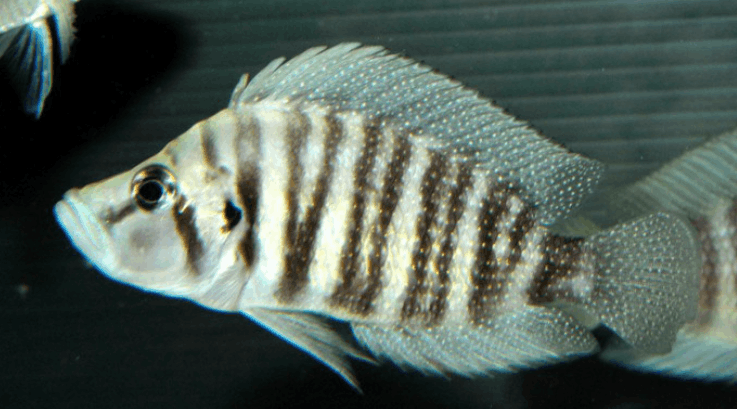

Systématique
- Ordre : Cichliformes
- Famille : Cichlidae
- Genre : Altolamprologus
- Espèce : A. compressiceps

Altolamprologus compressiceps est un cichlidé prédateur hautement spécialisé, endémique du lac Tanganyika en Afrique de l'Est. Décrit initialement comme Lamprologus compressiceps par Boulenger en 1898, il appartient à la tribu des Lamprologini. Son nom d'espèce fait directement référence à sa morphologie unique : un corps extrêmement comprimé latéralement.
Le mâle peut atteindre une taille de 13 à 15 cm, tandis que la femelle, nettement plus petite, dépasse rarement les 8 à 10 cm. Le corps est très haut, étroit et robuste, avec un profil céphalique concave et une bouche protractile dirigée vers le haut. La coloration varie selon les localités géographiques (morphotypes "Gold", "Red Fin", "Kigoma", etc.), allant du beige au brun foncé ou jaune doré, avec des barres verticales sombres sur les flancs et de nombreux points brillants (écailles nacrées) sur le corps et les nageoires.
Sa morphologie est une adaptation évolutive stricte à la chasse par embuscade dans les fissures rocheuses. Contrairement à son proche parent A. calvus, il possède un museau plus court et un corps proportionnellement plus haut. Ses écailles sont particulièrement dures et ossifiées, lui offrant une protection contre les morsures lors de ses incursions dans les anfractuosités.
Il s'agit d'un poisson au tempérament calme mais affirmé. Bien qu'il soit un prédateur, il n'est pas particulièrement agressif envers les espèces qui ne partagent pas sa niche écologique, mais il est strictement territorial envers ses congénères et les espèces de forme similaire. En aquarium, il passe beaucoup de temps à scruter les roches, se tenant souvent la tête vers le bas pour inspecter les failles.
C'est un chasseur de proximité qui se nourrit principalement de petits crustacés et d'alevins d'autres cichlidés. Sa technique consiste à s'approcher lentement de sa proie, à se courber légèrement pour maximiser sa poussée, puis à projeter sa bouche pour aspirer la victime. Malgré son allure massive de profil, sa finesse vue de face le rend presque invisible pour ses proies lorsqu'il attaque de front.
Mode : Ovipare, pondeur sur substrat caché (anfractuosité ou coquille).
La reproduction est caractérisée par un dimorphisme de taille crucial : la femelle doit pouvoir pénétrer dans une cachette (fissure étroite ou coquille de type Neothauma) dont l'entrée est trop étroite pour le mâle. La femelle dépose ses œufs au fond de la cavité. Le mâle, restant à l'extérieur, libère sa semence à l'entrée, que la femelle aspire vers l'intérieur en ventilant avec ses nageoires.
Une ponte peut compter entre 40 et 200 œufs selon la maturité de la femelle. Celle-ci assure seule la garde rapprochée des œufs et des larves à l'intérieur de la cachette, tandis que le mâle défend le territoire environnant. L'éclosion survient après environ 3 jours, et la nage libre est atteinte au bout d'une dizaine de jours. La croissance des jeunes est réputée pour être extrêmement lente, atteignant parfois seulement 2 à 3 cm en six mois.
Dimorphisme sexuel : Le mâle est significativement plus grand et massif que la femelle (souvent du simple au double en volume). Les nageoires pelviennes, anale et dorsale sont généralement plus effilées chez le mâle dominant. Chez les sujets matures, la forme des papilles génitales permet une distinction certaine.
Espérance de vie : 8 à 12 ans en captivité si les conditions physico-chimiques sont maintenues stables.
L'espèce occupe les zones rocheuses et les éboulis littoraux du lac Tanganyika, généralement à des profondeurs comprises entre 2 et 15 mètres, bien qu'elle puisse être observée plus profondément. Elle fréquente les zones où les amas de pierres offrent de nombreuses fentes étroites. On ne la trouve que très rarement en zone sablonneuse, sauf pour les variétés dites "Shell" qui utilisent des lits de coquilles vides.
L'eau du lac Tanganyika est caractérisée par une très grande stabilité, une forte oxygénation et une alcalinité élevée. Le substrat naturel est composé de roches sédimentaires couvertes d'un fin tapis d'algues (aufwuchs) abritant la microfaune dont se nourrissent les juvéniles.
Répartition

Origine naturelle :
- Afrique : Endémique du lac Tanganyika.
- Distribution : Présent sur l'ensemble du pourtour du lac (Burundi, Tanzanie, Zambie, RD Congo).
- De nombreuses variantes géographiques existent, chacune localisée sur des portions de côtes spécifiques.
Statut UICN : Préoccupation mineure (LC), bien que certaines populations locales puissent subir la pression de la collecte pour le marché aquariophile.
Paramètres de maintenance
Température : 23 à 27 °C (25 °C idéal).
pH : 8,0 à 9,5 (eau très alcaline obligatoire).
GH : 10 à 25 °dGH (eau dure).
Courant : Modéré ; une excellente filtration et une oxygénation maximale sont nécessaires pour reproduire les conditions du lac.
Volume conseillé : Minimum 250-300 litres pour un couple. Le décor doit être constitué d'un empilement de roches stables formant de nombreuses failles verticales et des grottes.
Régime alimentaire
Régime : Carnivore prédateur (micro-prédateur spécialisé).
En aquarium, il accepte les nourritures congelées (artémias, mysis, krill, vers de vase) et les nourritures sèches de haute qualité (granulés pour cichlidés).
L'apport de proies vivantes est idéal pour stimuler son comportement de chasse naturel. Il est important d'éviter les nourritures trop riches en graisses terrestres ou les produits destinés aux poissons herbivores.